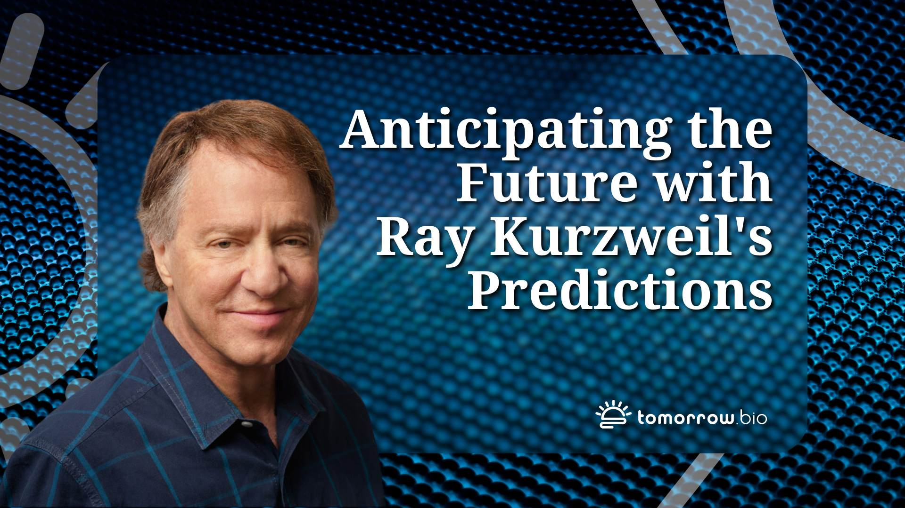

IA Safety Clock
Quand va-t-on perdre le contrôle de l’IA ? Cette horloge indique la date.
L’intelligence artificielle, autrefois simple concept de science-fiction, s’est transformée en une réalité bouleversante. Depuis deux ans, les progrès sont si rapides que cela en devient inquiétant. Pour alerter le grand public, l’IMD de Lausanne a conçu une horloge unique : l’AI Safety Clock.
.

Les prévisions du futurologue Raymond Kurzweil
Voici à quoi devrait ressembler notre futur proche, selon un ponte de l'IA. Le futurologue Raymond Kurzweil partage ses trois principales prédictions pour l'horizon 2050.Un système hautement autonome capable de surpasser l'humain dans la plupart des tâches devrait être disponible d'ici à 2029. Repéré sur BBC Science Focus Magazine.
Les prévision de Sam ALtman CEO Open AI
Focus sur Sam Altman,
Biographie
Prédictions: Naissance d'une IA super intelligente d'ici quelques milliers de jours, capable de découvrir toute la physique, et de réparer le climat.
Stratégie :Une concentration industrielle verticale, énergie, usine de puces et de composants semiconducteurs, et centres de données, pour un coût qui s'élèverait à des centaines de milliards de dollars, dont la recherche d'investisseurs et de capitaux étrangers pourrait nuire à la sécurité US..

Sed etiam facilis
Aenean ornare velit lacus, ac varius enim lorem ullamcorper dolore. Proin aliquam facilisis ante interdum. Sed nulla amet lorem feugiat tempus aliquam.

Feugiat lorem aenean
Aenean ornare velit lacus, ac varius enim lorem ullamcorper dolore. Proin aliquam facilisis ante interdum. Sed nulla amet lorem feugiat tempus aliquam.

Amet varius aliquam
Aenean ornare velit lacus, ac varius enim lorem ullamcorper dolore. Proin aliquam facilisis ante interdum. Sed nulla amet lorem feugiat tempus aliquam.